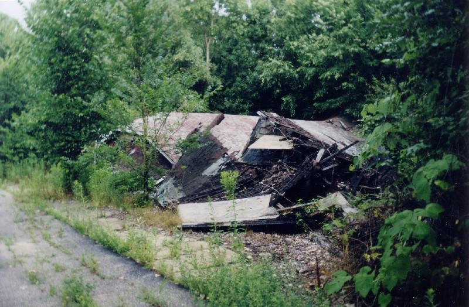
Most of the buildings on the former grounds of Chippewa Lake are in a state something like what you see above: dilapidated and falling down, if not completely flattened. My guess is that most of them weren't built to last, especially when it came to the concession stands and souvenir shops. It was hard to tell what a lot of the collapsing buildings originally were.
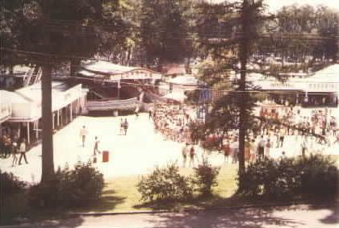
The midway used to be lined with places like this. Between the rides and games were places designed to get you to spend money, whether it was on a Coke and a hot dog or a souvenir flag. One famous concession hall was the Burger Factory, long since knocked flat.
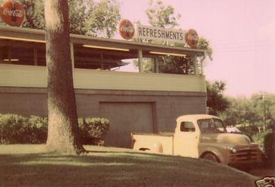
One that's still doing reasonably well is the pavilion you see pictured below. You wouldn't want to move your family in or anything, but at least it still retains its original structure.
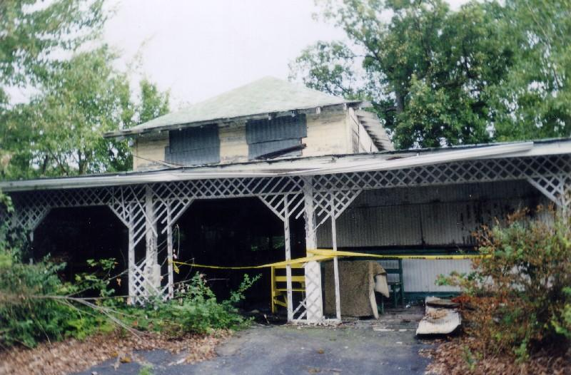
It's open on three sides and seems to have been a place where you could eat your carnival-food meal at a table and in the shade, out of the blazing summer heat that's always such a part of the amusement park experience.
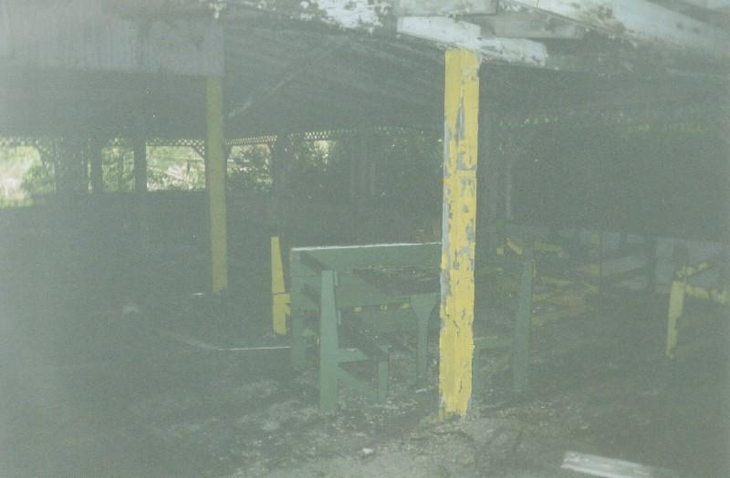
There are other buildings still standing around the park. With most of them it's impossible to tell what they were. Many were probably storage sheds, others repair bays, some groundskeepers' huts. After all these years of neglect they're falling down just like everything else.
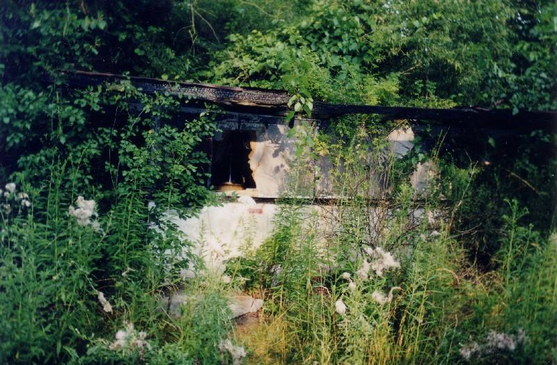
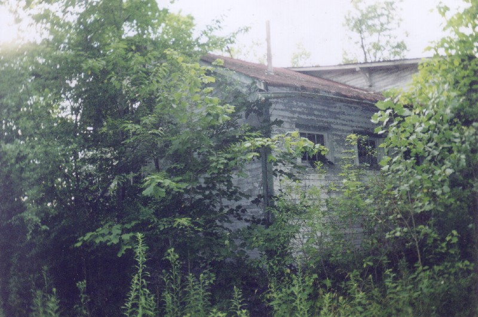
The Ballroom
At one time, Chippewa Lake's ballroom was one of its biggest attractions. The concerts and dances held here are still fresh in the memories of a lot of folks in Northeastern Ohio.
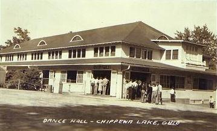
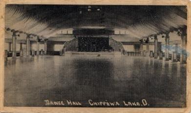
Which is why it's such a shame that one of Chippewa Lake's finest historic treasures was lost to fire in 2002. This is what it looked like shortly before the fire (courtesty of SBNO):

On June 13, 2002, a little girl was playing in the abandoned ballroom (not a safe proposition to start with, since the wide floor had begun to bow dangerously) and for some reason decided to play with fire. It was about 4:00PM. The flames spread quickly in the brittle structure. By the time firefighters reached the scene (hampered by the gated-off grounds) the ballroom had been reduced to a smoldering heap.
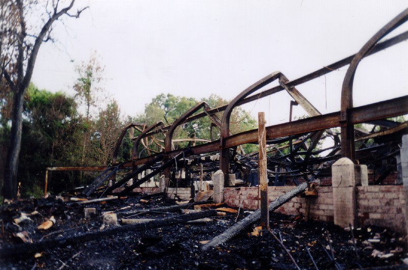
As you can tell, the heat was intense enough to bend the steel girders which supported the high ceiling. Now this charred tangle of metal, bricks, and ash is what greets you when you enter through the woods at the edge of the park proper.
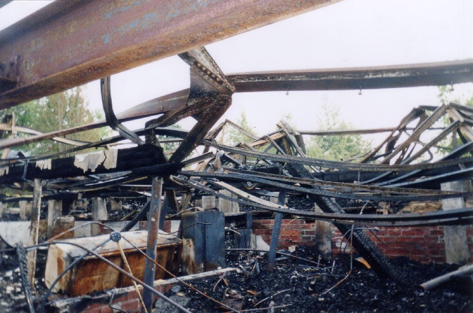
It's a shame, but it's not the first time arson has claimed an important part of Chippewa Lake Park. The lakefront hotel burned flat many years after the park closed, much like the ballroom.

Back